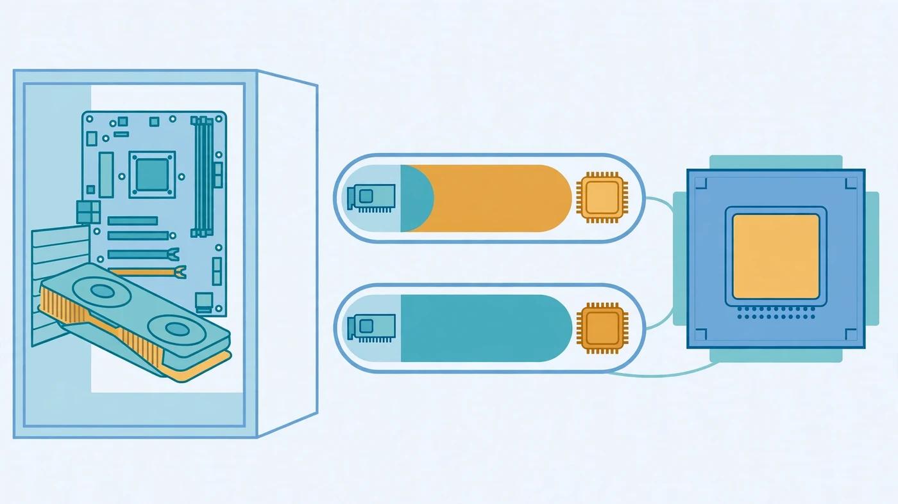

Does Upgrading Only Your GPU Fix a Bottleneck?
Does upgrading only your GPU fix a bottleneck? Only when the graphics card is actually the part holding your PC back. If your GPU is already running at full load and you are still short of your target frame rate, a faster card is the right fix and the gains are immediate. But if your CPU is the limit, a new graphics card changes almost nothing — the faster card simply waits faster while the processor still sets the pace. This guide shows you how to tell which situation you are in with a five-minute test, so you spend money on the part that actually fixes the problem.

Does Upgrading Only Your GPU Fix a Bottleneck? The Short Answer
A GPU-only upgrade fixes a bottleneck in exactly one situation: the graphics card is the slowest part of the chain. That is the case when the card runs near full load in the games you play while the CPU still has headroom, which is common at 1440p and 4K, and common again when the card is several generations old or short on VRAM. In that situation the upgrade pays off directly — more rendering power turns into more frames, because the processor was already waiting on the card.
It does not fix a bottleneck when the processor is the limit. Your frame rate is set by whichever part finishes its share of each frame last, and the CPU prepares every frame before the GPU can draw it. If the CPU cannot prepare frames faster, a stronger GPU receives the same number of frames per second and spends the extra time idle. The average frame rate barely moves, the 1% lows barely move, and the bottleneck percentage actually grows, because the gap between the two parts just got wider. The money is not lost — the new card is still there for the day the CPU is upgraded — but the problem you bought it to fix is still there.
How a Bottleneck Actually Works
Think of each frame as a two-step job. First the CPU works out what is happening in the game: player positions, physics, AI, draw calls, and the instructions for what goes on screen next. Then the GPU takes those instructions and draws the frame, pixel by pixel. The two steps run in a pipeline, and the frame rate is set by the slower of the two. A fast graphics card waiting on a slow processor is wasted money, and so is a fast processor feeding a weak card.
That is why "bottleneck" is always a question about a specific game, at a specific resolution, with specific settings. The same PC can be GPU-limited in one game and CPU-limited in another, and the balance flips again when you change resolution. Higher resolutions load the GPU far more while the CPU load barely changes, so the graphics card almost always becomes the limit at 4K, while the CPU matters far more at 1080p with a high refresh rate. Our CPU vs GPU bottleneck guide explains the distinction in full, and our resolution bottleneck guide shows how the balance shifts across 1080p, 1440p and 4K.
The Five-Minute Test: Is Your GPU Really the Limit?
Before you buy anything, run this test. It costs nothing and it is the difference between a useful upgrade and an expensive mistake.
- Turn off any frame rate cap. A cap makes utilization numbers meaningless, because both parts throttle down to the cap. Turn off V-Sync and any in-game frame limit first.
- Open a usage overlay. Use the monitoring overlay of your choice to show GPU usage, per-core CPU usage, VRAM usage and frame rate while you play.
- Play your most demanding game for a few minutes in the scenes where performance bothers you — busy fights, open areas, crowded towns — not an empty menu.
- Read the numbers. If the GPU sits near 95 to 100% usage and you are still short of your target frame rate, the graphics card is the limit and a faster card will help. If the GPU sits well below full load while one or more CPU threads are pinned near their maximum, the processor is the limit and a new card changes nothing. If neither part is maxed out, the limit is somewhere else — RAM, VRAM, storage or thermals — and our how to check a PC bottleneck guide walks through each of those cases.
Repeat the test in a second game before you decide. One game can mislead you: a CPU-heavy competitive shooter and a GPU-heavy open-world game can give opposite answers on the same PC. The part that is the limit in the games you actually play is the part worth upgrading.
When Upgrading Only Your GPU Fixes the Bottleneck
A graphics-card-only upgrade is the right move when the test above points at the GPU. The clearest signs:
- The GPU is at full load. Near-100% usage with the frame cap off and frame rates below your target is the textbook GPU limit. A faster card raises the ceiling directly.
- You play at 1440p or 4K. At these resolutions the graphics card does the heavy lifting in almost every game, so the card is the limit far more often than the CPU. Even a mid-range processor can usually keep a strong card fed at 4K.
- The card is old or short on VRAM. A card from several generations ago, or one with 8 GB of VRAM struggling with modern textures at high settings, is a genuine limit. When VRAM fills up, textures stream in late and you get hitches on scene changes — a problem that looks like a slow GPU but is really a full memory pool. Our VRAM guide explains what each resolution actually needs.
- Ray tracing or upscaling is the goal. If you want ray tracing, DLSS or FSR, only a newer card provides it. No setting change adds ray tracing cores to an old card. Our DLSS and frame generation guide explains when upscaling helps and when it only hides the real problem.
In these cases the upgrade is straightforward: the new card drops into the existing slot, the frame rate rises, and the CPU you already own is good enough to feed it. Check the power supply and case clearance first — a card that does not fit or that the PSU cannot feed is a different problem — but the upgrade itself is the fix.
When a New GPU Changes Nothing
There are several situations where a new graphics card looks like the answer and is not. The most common is the CPU limit described above: the GPU sits at 60% while a CPU thread is pinned, and the frame rate stays exactly where it was after the upgrade. A second is the frame cap: if V-Sync or an in-game limit caps you at 60 FPS, a faster card still renders 60 frames a second — you bought headroom you cannot see. A third is stutter from other parts, covered in the next section but one.
A fourth is the resolution mismatch. A flagship card bought for a 1080p 60 Hz monitor buys frames the monitor cannot show, and at 1080p the CPU is the limit in most competitive games anyway. And a fifth is the rest of the system: a card upgrade cannot fix a processor that is throttling under heat, a single RAM stick running in single-channel mode, or a game installed on a mechanical hard drive. In each of these cases the new card is not broken — it is simply waiting on a different part, and the frame rate proves it. Our low GPU usage guide covers the cases where a card is not being used properly, and our good bottleneck percentage guide explains why a small mismatch on a calculator is not a reason to panic.
Will Upgrading My GPU Fix a CPU Bottleneck?
No — and this is the single most expensive misunderstanding in PC upgrades. A CPU bottleneck means the processor cannot prepare frames fast enough, and the graphics card is already waiting for work. A stronger card waits faster. The frame rate stays capped by the processor, the 1% lows stay rough, and the bottleneck percentage grows because the performance gap between the two parts just widened.
What actually fixes a CPU bottleneck depends on how bad it is. The free fixes come first: close background apps, cap the frame rate slightly below your maximum so the CPU stops maxing out, and raise the resolution or graphics settings so the GPU has more work per frame and the CPU gets more time per frame. If those are not enough, the real fix is a CPU upgrade — and that often means a new motherboard and possibly new memory too, because a newer processor usually needs a different socket or platform. That is a bigger project than a card swap, which is exactly why so many people try the card first. Measure before you choose: if the test in this guide shows the CPU pinned and the GPU waiting, spend the money on the processor side. Our how to fix a PC bottleneck guide walks through the full fix order, cheapest first.
Does a GPU Upgrade Help With Stutter?
Usually not. Stutter is a smoothness problem, not an average-frame-rate problem, and a faster graphics chip rarely removes it. The usual causes sit outside the GPU entirely. A full VRAM pool causes hitches when textures stream in late. A single RAM stick in single-channel mode starves the CPU of memory bandwidth. A game on a hard drive stutters when it loads new areas. A part throttling under heat drops its speed in bursts. And shader compilation hitches on first play in some games, which no hardware upgrade removes.
The test is the same one from earlier: watch the frame time graph, not just the average FPS. If the average looks fine but the 1% lows are far below it, the problem is frame pacing, and the fix is whatever is causing the hitches. Our stuttering and 1% lows guide explains how to read those numbers, and our frame time guide explains why a high average FPS can still feel choppy. Fix the stutter's cause first, and only then judge whether the graphics card needs an upgrade.
What to Check Before You Buy the Card
A GPU-only upgrade is the easiest hardware swap in a PC, but four checks still catch people out. First, the power supply: check the card maker's minimum PSU recommendation for the exact model, and prefer a unit with a native 12V-2x6 connector for current-generation cards. A weak PSU causes crashes that look like a GPU problem — see our PSU bottleneck guide. Second, case clearance: measure the length of the card against the space in your case, and check that the power connectors reach. Third, the slot and the rest of the system: a current card works in an older PCIe slot, but check the PCIe guide if your board is several generations old, and confirm your CPU, RAM and storage are not the real limit first.
Fourth, the free fixes. Update the GPU driver, close background apps, check temperatures, and enable XMP or EXPO so the memory runs at its rated speed. A thermal-throttling part mimics a weak part, and a throttling processor looks exactly like a slow processor. Rule those out before you spend anything — the five-minute test costs nothing, and a driver update costs less than that.
Upgrade GPU or CPU First? The Decision Rule
Use the table below as the shortcut, but let your own measurements overrule it. The rule is simple: upgrade the part your test showed is the limit.
| What you measured | Upgrade first | Why |
|---|---|---|
| GPU near 100%, CPU has headroom | GPU | The card is the limit; a faster card raises FPS directly |
| GPU well below full load, CPU thread pinned | CPU | The processor sets the ceiling; a new card waits faster |
| 1440p or 4K, GPU at full load | GPU | High resolutions load the card far more than the CPU |
| 1080p high refresh, competitive games | CPU | The CPU prepares far more frames per second at low resolution |
| Neither part maxed, stutter or hitches | Neither — diagnose first | RAM, VRAM, storage or thermals are the usual cause |
| Frame cap or 60 Hz monitor | Neither — remove the cap first | A faster part cannot show frames the monitor or cap blocks |
One more thing to remember: bottlenecks move. Fixing the GPU often reveals that the CPU was next in line, especially at 1080p. After any upgrade, measure again with the same test. If the numbers flip — the new card now waits on the processor — you have found the next upgrade, and you can plan it instead of guessing at it. Our CPU and GPU pairing guide explains how to choose a balanced combination before you buy, and our PC upgrade checklist covers the compatibility checks that come with it.
Check Your Pairing Before You Order
Before spending anything, run the combination through the PC Bottleneck Calculator and read its methodology page so you know what the estimate means — it is a starting point, not a verdict. Then check the three things a calculator cannot see: your monitor's resolution and refresh rate, your power supply's wattage and connectors, and your case's clearance for the card's length. After the card is installed, verify the upgrade in your own games: play the games you actually play and watch GPU usage and per-core CPU usage. If the GPU sits near full load, the upgrade did its job; if it sits low while a CPU core is maxed out, the processor was the limit all along — and now you know exactly what to fix next.
Free PC Bottleneck Calculator — Estimate CPU and GPU balance for your resolution and workload: check whether your CPU, GPU or VRAM is the slow half of the frame on the PC Bottleneck Calculator (see its methodology page) before you buy a new graphics card.
Conclusion
Does upgrading only your GPU fix a bottleneck? Yes — when the graphics card is the limit, which is the case at 1440p and 4K, with an old or VRAM-short card, or whenever the five-minute test shows the GPU pinned near full load while the CPU has headroom. No — when the processor is the limit, when a frame cap or a 60 Hz monitor hides the gains, or when the real problem is stutter from RAM, storage or heat. A new card never fixes a CPU bottleneck; it only waits faster. Measure first, upgrade the part the test names, and measure again after the swap. That is the whole method — and it is the difference between money well spent and a faster card doing the same waiting the old one did.
Frequently Asked Questions
Will upgrading my GPU fix a CPU bottleneck?
No — it makes the imbalance worse. The CPU still cannot prepare frames any faster, so a stronger graphics card spends even more time idle waiting for work. The frame rate stays capped by the processor, and the bottleneck percentage grows because the gap between the two parts widens. Fix the CPU side first — settings, background apps, a frame cap, or a CPU upgrade — and then match a graphics card to it.
Does upgrading only your GPU fix a bottleneck at 4K?
Usually yes, because at 4K each frame carries so much pixel work that the graphics card is the limit in nearly every game. A faster card at 4K turns directly into higher frame rates, and the CPU's exact speed matters far less than it does at 1080p. The exception is a very old processor that cannot even feed a mid-range card — then the CPU still caps the frame rate at 4K too, and the card upgrade only helps once the processor is sorted.
Does a GPU upgrade help with stutter?
Rarely on its own. Stutter usually comes from RAM, storage, thermals or drivers, not from average frame rate. A full VRAM pool, a single RAM stick in single-channel mode, a game installed on a hard drive, or a part throttling under heat all cause hitches that a faster graphics chip does not remove. Fix the stutter's actual cause first, and only then judge whether the graphics card needs an upgrade.
Should I upgrade my GPU or CPU first?
Upgrade whichever one your own measurements show is the limit. If the GPU sits near 100% usage while the CPU has headroom, upgrade the GPU. If the GPU sits well below full load while one or more CPU threads are pinned, upgrade the CPU side. As a rough guide, GPU-first is right at 1440p and 4K, and CPU-first is right for competitive games at 1080p and high refresh rates — but measure first, because the rough guide is wrong often enough to cost real money.
How do I know if my GPU is the bottleneck?
Turn off any frame rate cap, then play your most demanding game for a few minutes with a usage overlay running. If the GPU sits near 95 to 100% usage and you are still short of your target frame rate, the graphics card is the limit and a faster card will help. If the GPU sits well below full load while a CPU thread is maxed out, the processor is the limit and a new card changes nothing.
Sources
Official documentation referenced in this guide: